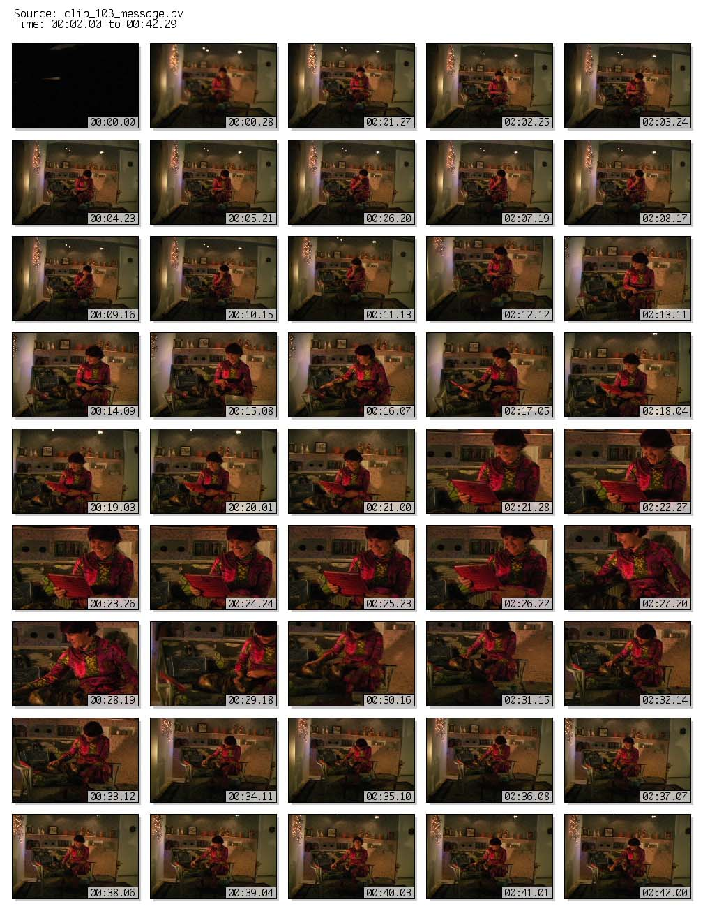

QT_PROOFSHEET example:
(By the way, this is some source footage from Deb and my 2006 Greetings video, which you can watch at www.subservientastronaut.com. It's a special-effects extravaganza, and a love story, too. You know, with a heart.)poly@thunderbird-3: qt_proofsheet clip_103_message.dv clip_103.jpg + + frame size : 180 x 120 + spacing : 18 + frame count : 45 + frames/row : 5 + sheet size : 1008 x 1305 + codec : jpeg + frames per second : 1.0471 + duration : 42.976310 + ............................................. poly@thunderbird-3:
Produced the following attractive proof sheet:
